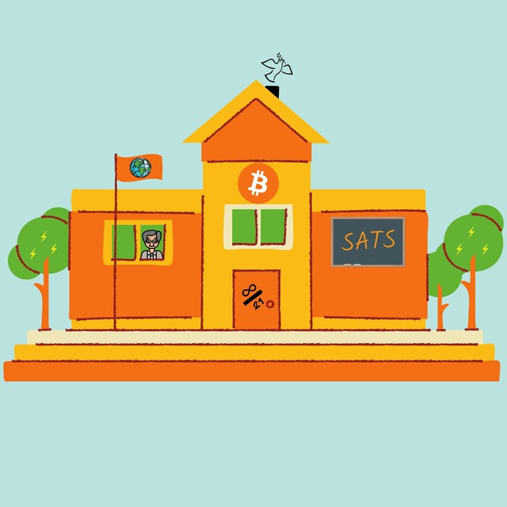

Bitcoin unterrichtenEin Netzwerk für Lehrer, die Bitcoin in ihren Unterricht integrieren wollen. Tausche dich aus, teile Materialien, lerne von anderen.
📨 Direkt zur Telegram-Gruppe@bitcoinunterrichten — Tritt heute bei!
Finde andere Lehrer, die Bitcoin-Projekte in ihren Fächern umsetzen – von Mathe bis Ethik.
Zugang zu Unterrichtsmaterialien, Arbeitsblättern und Projektideen für verschiedene Jahrgangsstufen.
Podcasts, YouTube-Videos und andere Medien von Lehrern zum Thema Bitcoin im Unterricht.
Videos und Podcasts zum Thema Bitcoin im Unterricht – in chronologischer Reihenfolge.
Bitcoin und Bildungswesen – Wieso Bitcoin kein Thema an Schulen ist
→ Video ansehenDie Österreichische Schule und Bitcoin im Bildungssystem
→ Video ansehenUnterrichtsmaterialien, Konzepte und Dokumentationen für den Einsatz im Klassenzimmer.
Komplettes Schulbuch für Schüler ab 14 Jahren. 10 Lektionen zum sicheren Umgang mit Bitcoin – gratis Download.
→ Zum DownloadVollständiger Plan für eine Bitcoin-Projektwoche an Schulen – von der Kaurischnecke zum Bitcoin.
→ PDF herunterladenFünfteilige Serie über die Durchführung einer Bitcoin-Projektwoche in der 9. Klasse – mit Verlinkung zu allen Teilen.
→ Auf Nostr lesenInteresse? Tritt direkt der Telegram-Gruppe bei oder kontaktiere uns per Nostr.
Unterstütze die Initiative mit Sats via Lightning.